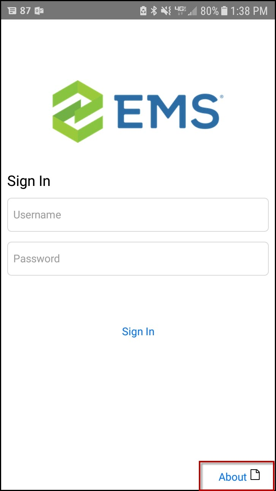
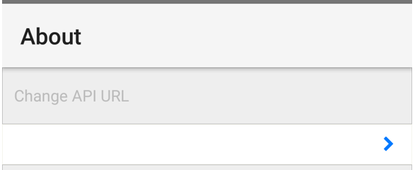
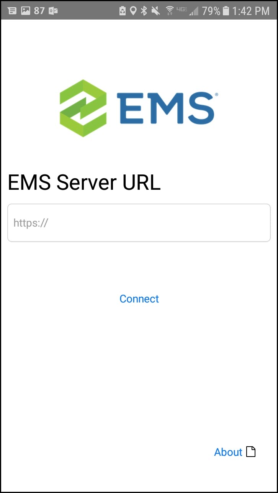

There are two ways to deploy the EMS Mobile App for your users:
Public Deployment—The standard public app store offered by Apple and Google.
Private Deployment—A private enterprise app store. (This approach can also be integrated with your company's Mobile Device Management system.)
It is important to understand the compatibility between the EMS Mobile App and EMS Platform Services. The EMS Mobile App needs to be on the same version or higher as EMS Platform Services. For example, the EMS Mobile App Update 20 version will be compatible with EMS Platform Services Update 19 or older. However, compatibility issues will exist if you try to install EMS Platform Services Update 20 with an older version of the EMS Mobile App (Update 19 or older).
To deploy via the public app store, direct users to the Google Play and Apple app stores on their mobile devices. They will be able to download the EMS Mobile App by clicking on the link. However, they will have to manually input the EMS Mobile API URL. They will receive a prompt to do so the first time they open the EMS Mobile App.
If users need to change the API URL at a later date, they can:
Open the EMS Mobile App, and then click About in the lower right corner.

Click to change the API URL.

Enter the API URL you provide and connect.

While Public Deployment might be easier for your IT staff, please consider the following:
Users will have to input the
EMS will frequently deploy EMS Mobile App updates to the app store. Most users will have this app set to automatically update and will receive updates even if you have not yet upgraded your EMS Mobile API.
While EMS Software aims to make the Mobile API backwards- and forwards-compatible within major updates, we might not do so all the time.
Deploying via the public app store requires you to make major updates to the EMS Mobile API as soon as they are available.
To deploy via a private enterprise app store, first download the unsigned apk/ipa files from the Downloads area of
As an example, here are the key steps to resign and deploy the unsigned EMS Mobile App ipa file (following instructions provided here):
Download unsigned builds: .ipa and .apk files
Configure and Re-Sign the EMS Mobile App (Private Deployment Only)
Change the EMS Mobile App Logo (Private Deployment Only) (if using MDM)